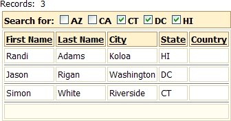

Filtering a Grid with Quick Search
Quick Search is an option for a grid component that allows you to quickly filter and re-display its contents.
To add Quick Search to a grid:
Create a grid based on the Customer table of the AlphaSports database. Make sure the grid displays the "Bill_State_Region" field.
If the grid is not already open in the Grid Builder, open it now.
Select the Grid > Properties page.
Scroll down to the Quick Search section and change Quick Search > Has Quick Search to "True".
Click
 in Quick Search > Field(s) to Search to display the Select Fields(s) to Search dialog.
in Quick Search > Field(s) to Search to display the Select Fields(s) to Search dialog.Leave Search in a single field selected.
Select "Bill_State_Region" in the Fields to search list and click OK.
Select "Dropdownbox" in the Quick Search > Control type list.
Click
in Quick Search > Choices to display the Define Choices for 'QuickSearch' dialog.
Define Quick Search Choices
Select "Dynamic" in the Define Choices > List Type list.
Select "DBF-Table" in the Data Source > Data source type list.
Select "customer" in the Data Source > Table name list.
Enter "Bill_State_Region" in the Data Source > Display value field/ex
pression field.Click OK to continue.
The Preview tab of the Grid Builder should show something like the following.
Publish the page with the grid and select "NH" from the drop down list.
This is what the grid would look like when using a check box control for the Quick Search. In this case the number choices was limited to 5. as you can see, this style has the benefit of making multiple selections easy to apply.

See Also
Contents, Defining a Quick Search